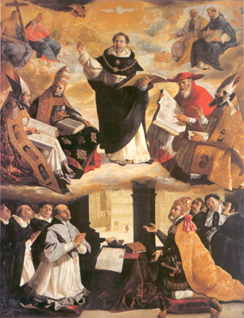

|  | |
|---|---|
| CORPUS THOMISTICUM | |
| ABBREVIATIONES ET SIGNA | |
| desumpta ex | |
| A. DONDAINE Liste des abréviations latines et sigles recommandés pour l'apparat critique «Bulletin SIEPM» 2 (1960) 142-149 |
|
| Abbreviationes | |
| acc. | accentus |
| add. | addidit (addit, addiderat, additio, etc.) |
| adscrips. | adscripsit |
| al. man. | alia manus (etc.) |
| al. | aliter (alias, etc.) |
| alt. | alterum (altera, etc.) |
| arg. | argumentum |
| c. | (post numerum cuiusdam libri) caput (capitulum, etc.) alias cap. |
| cap. | caput (capitulum) |
| cancell. | cancellavit (cancellatum, etc .) |
| cet. | ceteri |
| cf. | confer (conferas, conferatur, et caetera). |
| cod. | codex |
| codd. | codices |
| col. | columna |
| comm. | commentum (commentarius, etc.) |
| comp. | compendium |
| conf. | confusum |
| coni. | conicimus (conicio, etc.) |
| corr. | correxit (correctio, etc.) |
| damn. | damnavit |
| def. | deficit (defectum loci vel anomalum finem significat) |
| del. | delevit (deletum, etc.) |
| des. | desinit |
| det . | deterior (deteriores) |
| dist. | distinxit (distinctio, etc.) |
| dub. | dubitanter (dubium, etc.) |
| ed. | edidit (editio, etc.) |
| edd. | editiones |
| e. g. | exempli gratia |
| em. | emendavit (emendat, emendatio, etc.) seu a quodam verbo antecedenti duxit |
| eras. | erasit |
| excerpt. | excerptum (excerptiones, etc.) |
| exp. | expunxit (expunctum, etc.) |
| expl. | explicit |
| f. | folium |
| ff. | folia |
| fort. | fortasse |
| gl. | glossa |
| hab. | habet |
| h. l. | hoc loco |
| hom. | homoeoteleuton (homoioteleuton) |
| i. e. | idest |
| imp. | imperfectum (idest inceptum et nondum ex toto factum) |
| inc. | incipit (incipiendo. etc.) |
| ind. | indicavit |
| induc. | inducente (forma exemplaris ad interpretationem erroneam) |
| inf. | inferior (inferius, etc.) |
| inser. | inseruit |
| inv. | invertit (ordo praeposterus, inversus, etc.) |
| iter. | iteravit, (iteratum, etc.) |
| l. c. | loco citato |
| lac. | lacuna (idest spatium vacans in codice) |
| lect. | lectio |
| leg. | legit |
| legend. | legendum: (praeoptamus lege plene scriptum) |
| lib. | liber |
| lin. | linea |
| lit. | litura |
| litt. | littera |
| man. | manus (etc.) |
| marg. | margo (etc.) |
| ms. | codex manu scriptus (sed melius cod.) |
| mss. | codices manu scripti |
| mut. | mutavit |
| n. | numerus (lineae, paginae, etc.) |
| obsc. | obscurum (seu non liquet) |
| om. | omisit (omittitur, omissio, etc.) |
| omn. | omnes |
| op. cit. | in opere citato (seu laudato) |
| p. | (ante numerum quemdam) pagina |
| p | (ante sigla alicuius codicis) formam pristinam textus a librario principali scripti significat (e. g. pA pG pV) |
| post. | posterior (etc.) |
| pr. | prius (primum, etc.) |
| praef. | praefatio (prolegomena, introductio, etc.) |
| praem. | praemisit (anteposuit, etc.) |
| pr. man. | prima manus (etc.) |
| ras. | rasura |
| rec. | recentior (recentiores) |
| rel. | reliqui |
| rep. | repetivit (repetitio, repetit, etc.) |
| rest. | restituit (restitutum est, etc.) primum scriptum restauratum vel debito loco relatum significat |
| rub. | rubrica (rubricator, etc.) |
| s | (ante sigla alicuius codicis) secundum statum seu alteram manum significat (e. g. sA sG sV) |
| saep. | saepius |
| scil. | scilicet |
| scrips. | scripsimus (scripsi, etc.) |
| sec. | secundum (etc.) |
| sq. | sequens |
| sqq. | sequentes |
| subscr. | subscripsit (subscriptus, subscriptio, etc.) |
| sup. | supra (super, superior, etc.) |
| suppl. | supplevit (etc.) |
| susp. | suspicatur |
| t. | tomus |
| tert. | tertium (etc.) |
| transp. | transposuit (transpositio, etc.) |
| v. | versus (in opere poetico, in Sacra Scriptura, etc.) sed non linea, quae per lin. significatur |
| v. g. | verbi gratia |
| v. | videtur (videas, vide, etc.) |
| vol. | volumen |
| Vulg. | Vulgata Sacrae Scripturae interpretatio |
| Signa | |
| (?) | dubitationem indicat |
| post lemma, omnium codicum non enuntiatorum consensum affirmativum seu positivum significat | |
| ... | partem lemmatis inter extrema non positam significat (e. g. ego ... colligo om. A pro ego in hac lectione devotionem colligo om. A) |
| - | explet lemmatis partem in variantibus non iteratam (e. g. temptavit | -verit A -verunt G -verint J) |
| spatium vacans (seu siglum | ) | elementa apparatus (unités critiques, die einzelnen Bemerkungen des textkritischen Apparats) disiungit: e. g. 18 aliter alter G alterum A 22 substantia subsistentia A 23 essentia esse G ecclesia M seu 18 aliter alter G alterum A | 22 substantia subsistentia A | 23 essentia esse G ecclesia M |